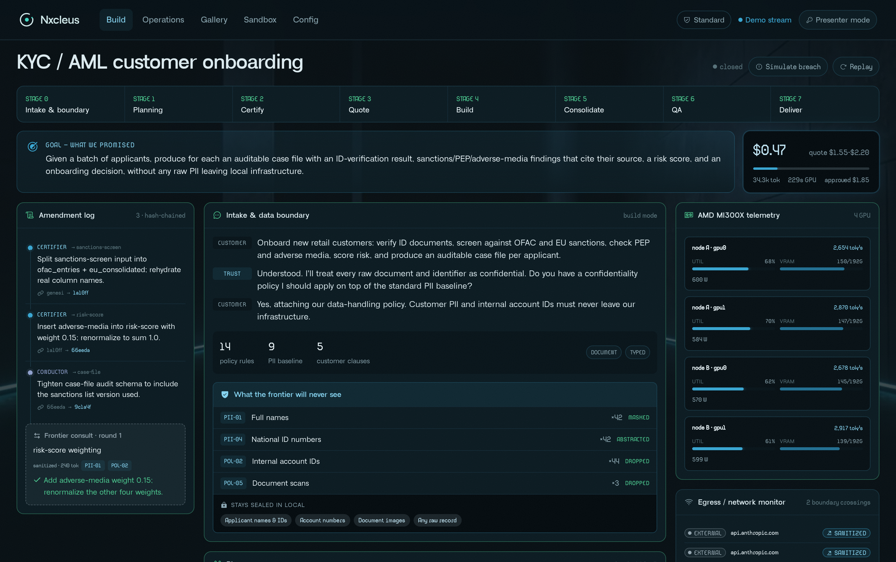

A plain-language description becomes a planned, certified, fleet-built, adversarially-QA'd process — running forever on AMD hardware you control.
Banks, insurers, clinics and law firms are forbidden — by regulators and their own policies — from sending customer data to external AI clouds. Frontier assistants are simply banned inside the walls.
KYC checks, claims triage, regulatory reporting: high-volume work still runs on consultants, spreadsheets and months-long software projects that are obsolete on arrival.
Even a frontier harness like Claude Code can't carry this work: policy keeps it outside, and no single context window holds an enterprise process end-to-end. Local models alone lack the harness. The gap is architecture, not model weights.
A frontier model — e.g. GPT-5.6 or Claude Fable 5 — sees only a sanitized brief, governed by your own confidentiality policy. It designs the work topology and the model bill-of-materials. It never touches raw data.
Intake, certification against the raw context the frontier never saw, the parallel build fleet, adversarial QA — and every operate-phase run. All on customer-controlled AMD compute.
Sovereign Mode rebinds even planning on-fleet — zero external calls. Any egress during a sovereign job raises a violation and paints the run red.
On the live golden run, all 138 deliberately hard-to-spot planted duplicate-claim patterns surfaced as candidates — live-measured. The insurer sandbox plants duplicates for one incident: same date, amounts within 5%, different claim IDs, shaped to slip past regex and rule engines. Confirming them takes reasoning, not string-matching.
Full live build, stages 0 → 7. A KYC / AML onboarding process planned, certified, fleet-built, QA'd and registered in a single session on AMD MI300X.
The proof streams live. Per-node rocm-smi utilization, VRAM and tokens/sec render in the cockpit as the build runs — live at amd.nxcleus.tech.

Prompt, files, code, DBs + your policy. A trust model strips what's forbidden, composes the sanitized brief.
The frontier planner sees only the brief; designs the work topology + model bill-of-materials. The one crossing.
A strong local model completes the plan against the real raw context, logs a signed amendment trail, pins the goal.
The BoM becomes a deterministic, itemized price — before a single build token is spent. Approve to proceed.
Capability-routed coder agents build in waves with declared touch points; a conductor reviews between waves.
A consolidator merges wave outputs, gated by objective tests — nothing lands unless it passes.
Inspectors attack the build; a lineage-independent Numeric Oracle re-derives the math; the goal is re-checked.
The verified process lands in the registry with docs, tests & a metered invoice. Then it runs forever.
A factory ships a deliverable and walks away. Nxcleus builds a process and then keeps it alive — owned, running, and refinable inside your walls.
Describe → sanitize → plan → certify against the raw context → build in parallel waves → adversarial QA → the process lands in the operations registry.
The certified process runs on new data, fully local — zero frontier calls — metered per run, with oracle spot-checks as a live warranty.
Change requests re-open planning under the same triage model; every refinement ships a versioned, diffed, re-certified v(n+1). Old versions stay runnable.
Every local token runs on AMD silicon — no exceptions. The live demo serves on AMD-hosted serverless MI300X (ROCm + vLLM); a dedicated single-tenant MI300X node — 192 GB HBM3 — is the deploy profile. The map below is the scale target.
Numeric oracle, trust layer / OCR, adversarial inspector. Gemma is merit-picked: deliberately lineage-independent from the coder fleet.
Certifier, wave conductor, consolidator, Sovereign-Mode planner. Allocation justified line-by-line by the plan's model bill-of-materials.
Capability-routed coder pool — each model to what it is measurably best at.
The stage-1 frontier planner — your pick, e.g. GPT-5.6 (via OpenRouter) or Claude Fable 5, or bring your own keys. Sees the sanitized brief, nothing else. Rebindable per seat; removed entirely in Sovereign Mode.
A consultancy building the same process once, decaying from day one — data still leaving.
At scale the gap only widens: a frontier call on every run compounds with every record (modeled), while a certified process reuses one sanitized plan and meters near-zero local compute. The live KYC / AML process, measured at amdplatform.nxcleus.tech/operations, prices at a modeled 3–5× over cost and still lands under a nickel per record; pilot builds at a modeled $2–10k against ~$0.41 of live-measured compute.
Intelligent process automation, global — growing ≈21% a year.
Automation spend inside regulated industries: banking, insurance, healthcare, legal.
Sovereign AI automation for mid-size regulated firms. CIS, EU & MENA beachhead.
We operate where external AI is banned.
Customer-policy-governed sanitization, with a local certifier that checks the plan against data the frontier never saw. An architecture, not a feature toggle.
The frontier authors; a local model finishes and certifies — with a visible, signed amendment log. The small model corrects the big one.
Delivery is verified against the customer's original ask, not the plan's drift. Trust that copilots can't retrofit.
Every model tagged by what it's measurably best at — the routing decision visible per module, GPU allocation justified by the plan's bill-of-materials.
Where a step is deterministic, models forge their own scripts, fitted to the business's exact schemas — certified runs get faster, cheaper, more repeatable.
Every delivered process lands in the registry as a versioned, refinable asset. Leaving means abandoning a growing library.
A working MVP on a live URL: full 0→7 builds, egress ledger, judge sandbox, Sovereign Mode. Every local seat on AMD MI300X.
Two paid design-partner pilots in regulated firms; security posture & audit packaging; the sovereign appliance spec.
A sovereign AMD appliance offering and a cross-customer library of certified process templates.